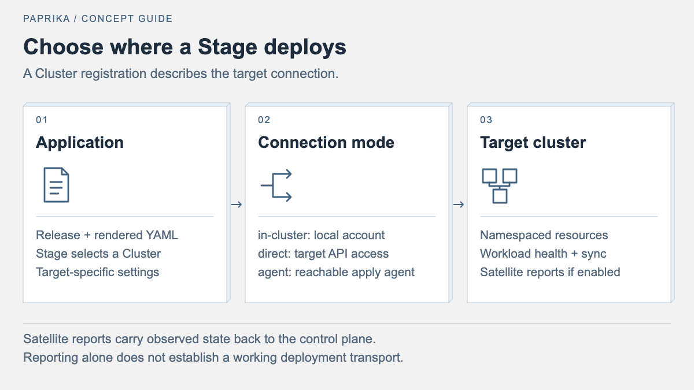

Manage delivery across Kubernetes clusters
Register deployment targets, configure direct or satellite connections, and understand cluster inventory and application placement.
Paprika combines cluster registrations, application placement, and observed health into one fleet. A satellite in each remote cluster watches local state and sends compact reports to the central control plane over an outbound HTTPS connection. The first authorized report registers the cluster and adds its applications to the existing fleet views.


Each Stage also references a Cluster resource that describes how the
operator should connect to its deployment target.
Cluster Modes
The Cluster CR supports three connection modes:
| Mode | Use Case |
|---|---|
in-cluster |
The operator runs inside the target cluster and uses its own service account. |
direct |
The operator connects to a remote API server using a kubeconfig stored in a Secret. |
agent |
A satellite reports observed state through an outbound connection. Deployment through the existing apply agent additionally requires a reachable agent endpoint. |
Direct access to GKE with Workload Identity
The Paprika manager image includes a client-go credential helper. It obtains
short-lived Google application-default credentials from the manager pod's
Workload Identity and does not require gke-gcloud-auth-plugin or a service
account key. Bind the manager's Kubernetes service account to a dedicated Google
service account, then grant that identity only the GKE discovery and target
Kubernetes RBAC permissions needed for the registered cluster. Ensure the
manager can reach the target API endpoint and that the kubeconfig contains its
verified CA certificate. This is separate from spec.provider cloud inventory
credentials and from satellite authentication.
Place a kubeconfig in the direct Cluster's referenced Secret, with the usual cluster, CA, context and user entries. Its user authentication block is:
exec:
apiVersion: client.authentication.k8s.io/v1
command: /manager
args: [gke-exec-credential]
interactiveMode: Never
Client-go refreshes the short-lived token before expiry. Restrict who can write the Cluster and its kubeconfig Secret: a kubeconfig exec entry is executable configuration in the manager pod, not merely a credential. Verify target RBAC, network reachability, remote reads and a migration hook before using the connection for production promotions. Satellite reports alone do not prove that this direct deployment transport works.
For a live, read-only check from the manager pod, obtain the expected target endpoint and namespace UID independently from the cloud provider and target cluster, then run:
kubectl -n paprika-system exec deployment/paprika-controller-manager -c manager -- \
/manager fleet-direct-probe --cluster-namespace paprika-system \
--cluster-name vocus-prod --target-namespace sfh-vocus-prod \
--expected-server https://EXAMPLE.gke.goog --system-ca \
--expected-namespace-uid EXPECTED_UID
Use the actual manager deployment, Cluster name, target endpoint and namespace
UID for the installation. The DNS endpoint mode uses the image's system CA
roots; it refuses custom CA files, proxies and insecure TLS. For an endpoint
using a pinned private CA, replace --system-ca with
--expected-ca-sha256 and the SHA-256 of its CA bytes. The command uses the
registered kubeconfig and the same client-go configuration path as release
reconciliation, reads the target namespace, and returns JSON containing the
registration and Secret identities, the target namespace UID and observation
time. It rejects a registration or Secret changed during the read. Its output
does not include tokens, kubeconfig contents or credential errors. Compare the
identities and resource versions with fresh management-cluster reads before
using the result; successful observation does not authorize a deployment or
prove write permissions, migration hooks or ongoing connectivity.
Satellite Onboarding
Install the central chart and CRDs from a build containing satellite support.
The API and operator serve /api/satellite/report; expose that route at the
central API origin. Satellite authentication uses a token scoped to one cluster
registration and is independent of browser or MCP authentication.
For each physical cluster, choose a unique, stable central name. A satellite
derives the physical cluster's identity from the kube-system namespace UID.
The control plane pins that UID on the first report and rejects a different
cluster using the same registration.
Create one random token and provision it in both environments. The central
Secret must be named <cluster-name>-satellite-token and carry the label
paprika.io/satellite-cluster: <cluster-name>. The satellite chart references
an existing local Secret; keep the token out of values files, command flags,
and version control.
# Replace these values with the intended contexts and central API origin.
PAPRIKA_CONTROL_CONTEXT=control-plane
PAPRIKA_SATELLITE_CONTEXT=edge-eu
PAPRIKA_CONTROL_NAMESPACE=paprika-system
PAPRIKA_SATELLITE_NAMESPACE=paprika-satellite
PAPRIKA_CLUSTER_NAME=edge-eu
PAPRIKA_CONTROL_URL=https://paprika.example.com
PAPRIKA_IMAGE_TAG=replace-with-immutable-build-tag
paprika_satellite_tmp="$(mktemp -d)"
chmod 700 "$paprika_satellite_tmp"
trap 'rm -rf "$paprika_satellite_tmp"' EXIT
openssl rand -hex 32 | tr -d '\n' > "$paprika_satellite_tmp/token"
chmod 600 "$paprika_satellite_tmp/token"
kubectl config use-context "$PAPRIKA_CONTROL_CONTEXT"
kubectl config current-context
kubectl -n "$PAPRIKA_CONTROL_NAMESPACE" create secret generic \
"$PAPRIKA_CLUSTER_NAME-satellite-token" \
--from-file="token=$paprika_satellite_tmp/token"
kubectl -n "$PAPRIKA_CONTROL_NAMESPACE" get secret \
"$PAPRIKA_CLUSTER_NAME-satellite-token"
kubectl config current-context
kubectl -n "$PAPRIKA_CONTROL_NAMESPACE" label secret \
"$PAPRIKA_CLUSTER_NAME-satellite-token" \
"paprika.io/satellite-cluster=$PAPRIKA_CLUSTER_NAME"
kubectl -n "$PAPRIKA_CONTROL_NAMESPACE" get secret \
"$PAPRIKA_CLUSTER_NAME-satellite-token" --show-labels
kubectl config use-context "$PAPRIKA_SATELLITE_CONTEXT"
kubectl config current-context
kubectl create namespace "$PAPRIKA_SATELLITE_NAMESPACE"
kubectl get namespace "$PAPRIKA_SATELLITE_NAMESPACE"
kubectl config current-context
kubectl -n "$PAPRIKA_SATELLITE_NAMESPACE" create secret generic \
paprika-satellite-token --from-file="token=$paprika_satellite_tmp/token"
kubectl -n "$PAPRIKA_SATELLITE_NAMESPACE" get secret paprika-satellite-token
helm template paprika-satellite charts/satellite/ \
--namespace "$PAPRIKA_SATELLITE_NAMESPACE" \
--set "controlPlaneURL=$PAPRIKA_CONTROL_URL" \
--set "cluster.name=$PAPRIKA_CLUSTER_NAME" \
--set "cluster.namespace=$PAPRIKA_CONTROL_NAMESPACE" \
--set token.existingSecret=paprika-satellite-token \
--set "image.tag=$PAPRIKA_IMAGE_TAG"
kubectl config current-context
helm upgrade --install paprika-satellite charts/satellite/ \
--namespace "$PAPRIKA_SATELLITE_NAMESPACE" \
--set "controlPlaneURL=$PAPRIKA_CONTROL_URL" \
--set "cluster.name=$PAPRIKA_CLUSTER_NAME" \
--set "cluster.namespace=$PAPRIKA_CONTROL_NAMESPACE" \
--set token.existingSecret=paprika-satellite-token \
--set "image.tag=$PAPRIKA_IMAGE_TAG" \
--wait --timeout 5m
kubectl -n "$PAPRIKA_SATELLITE_NAMESPACE" get deployments,pods
kubectl --context "$PAPRIKA_CONTROL_CONTEXT" \
-n "$PAPRIKA_CONTROL_NAMESPACE" get cluster "$PAPRIKA_CLUSTER_NAME" -o yaml
If the satellite namespace already exists, omit its creation. No Paprika CRDs are required in the remote cluster: standard Deployments, StatefulSets, and DaemonSets supply application observations. When the remote cluster also has Paprika Applications, the satellite watches their status and uses those application identities.
For a pre-existing agent registration, declare the satellite token explicitly:
apiVersion: clusters.paprika.io/v1alpha1
kind: Cluster
metadata:
name: edge-eu
namespace: paprika-system
spec:
displayName: Edge Europe
mode: agent
satellite:
tokenSecretRef:
name: edge-eu-satellite-token
key: token
Newly onboarded clusters appear in the cluster board and their applications
join fleet queries automatically. An existing direct registration can opt
into reporting by adding spec.satellite.tokenSecretRef; its kubeconfig and
deployment connection keep working. A newly onboarded agent Cluster can
later use mode: direct with a kubeconfigSecretRef to enable central
deployment orchestration while retaining its satellite observations.
The in-cluster registration continues to use the control plane's own service
account for inventory.
Management Policies
A Cluster declares the ceiling of what Paprika may do to it, following
Crossplane's managementPolicies vocabulary. The field is on the Cluster, not
on the satellite block, because the ceiling applies to every transport: a
direct kubeconfig and a satellite report are two ways to reach the same
cluster, and a read-only cluster is read-only either way.
apiVersion: clusters.paprika.io/v1alpha1
kind: Cluster
metadata:
name: edge-eu
namespace: paprika-system
spec:
mode: agent
managementPolicies: [Observe] # observations only; nothing is written
satellite:
tokenSecretRef:
name: edge-eu-satellite-token
key: token
| Policy | Permits |
|---|---|
Observe |
Reading inventory, drift, health and capacity. Never writes. |
Apply |
Creating and updating managed resources, including sync hooks. |
Prune |
Deleting managed resources dropped from the desired manifest set. |
Delete |
Deleting managed resources when a Release is deleted. Without it, release cleanup orphans the workloads. |
SelfHeal |
Re-applying drift and rolling back a degraded release without an operator asking. |
Rollout |
Shifting traffic through canary, blue-green, A/B and mirror strategies. |
* |
Every policy this build knows. |
Three rules decide the effective set:
- Unset means full management. A Cluster with no
managementPoliciesgrants everything, so every existing registration keeps working. - An explicitly empty list grants nothing.
managementPolicies: []is the way to say "registered, but manage nothing"; omitting the field is not. - A Stage narrows, never widens.
spec.stages[].managementPolicieson anApplication, andspec.managementPolicieson a standaloneStage, are intersected with the Cluster ceiling. A stage asking for*on anObserve-only cluster getsObserve.
Two failures are deliberate. A policy read that fails for any reason other than
"no such registration" is reported rather than degraded to full management —
assuming a ceiling away on an API blip is exactly the write an observe-only
cluster is meant to prevent. And a withheld action parks the work instead of
failing it: the Release stays in Promoting with a PromotionPolicyWithheld
condition naming the refused action, and rechecks every five minutes. Widening
the ceiling lets it proceed without a retry.
status.satellite.reportedPolicies records the satellite's last reported local
claim. status.satellite.effectivePolicies intersects that claim with the
Cluster ceiling and expands *; it is unknown until the first report. The
claim is an observation, not an authorization check or grant. The satellite's
actual Kubernetes permissions still apply. A direct connection uses the Cluster and Stage ceilings
separately, so it can have different permissions from an Observe-only satellite.
A spec change recomputes the satellite's effective set from its last claim even
while the satellite is disconnected.
Autonomy and Disconnection
spec.satellite.autonomy records what the satellite is supposed to do while it
cannot reach the control plane:
| Mode | While connected | While disconnected |
|---|---|---|
ObserveOnly |
Reports state; the control plane reconciles. | Nothing converges until the link returns. |
Failover (default) |
The control plane reconciles. | The satellite takes over after failoverTimeout (default 2m). |
Delegated |
The satellite reconciles; the control plane supplies desired state and observes. | Nothing changes, because the satellite was already the reconciler. |
A satellite reconciles what it was told to apply. Every bundle the control
plane pushes down the link is applied and then remembered in a ConfigMap
(paprika-satellite-bundles) in the satellite's own namespace, and the autonomy
loop re-applies those bundles on an interval (--satellite-autonomy-interval,
default 30s). That is deliberately narrower than the control plane's release
machinery: a satellite enforcing the last known-good bundle through an outage is
useful, while a satellite reconciling a release history it cannot see would not
be.
The handover is one-directional and time-gated. Failover waits for
failoverTimeout of failed deliveries before reconciling, so a control-plane
restart does not produce two reconcilers at once. After local work, a reconnect
reports OverrideHeld for two minutes before returning to Connected: the
control plane needs to see that the cluster changed underneath it before the
satellite claims to be a quiet follower again. Delegated is not an override
case; a satellite acting there is the arrangement.
status.satellite.operatingState carries the result: Connecting, Connected,
Autonomous, OverrideHeld, or Disabled for a disabled registration.
The satellite's ServiceAccount needs write verbs for whatever its applications
deploy. The chart grants reads plus the bundle store and nothing else, so an
apply is refused until rbac.extraClusterRoleRules grants your kinds.
Capacity and Node Pools
The satellite sums node status.allocatable and scheduled, non-terminal pod
container requests on every report, and reads metrics.k8s.io when the cluster
has it. The result lands in status.satellite.capacity; usedKnown says whether
usage was actually measured, so a cluster without metrics-server reports
requests and allocatable and marks usage unavailable rather than claiming idle.
kubectl -n paprika-system get cluster edge-eu -o json \
| jq '.status.satellite.capacity, .status.satellite.nodePools'
Node pools are derived from the provider's pool label (vke.vultr.com/node-pool,
cloud.google.com/gke-nodepool, eks.amazonaws.com/nodegroup,
kubernetes.azure.com/agentpool), falling back to
node.kubernetes.io/instance-type. The provider type is detected from node
providerID prefixes and copied into status.provider.type, so a cluster the
control plane cannot dial still shows its pools. Provider-API enrichment —
autoscaler bounds, plan sizes — still requires spec.provider credentials and a
reachable API; status.provider.state stays NotConfigured until that happens.
Capacity for an agent-mode cluster is served from the satellite report. A
direct cluster keeps the live read even when it also reports through a
satellite, because a live read is fresher than a heartbeat.
Stream Transport
Set stream.enabled=true on the satellite chart to keep one bidirectional
Connect stream open instead of posting each report. Reports still travel in the
same JSON document the POST transport sends, validated and fenced by the same
code — the transport changes how the bytes arrive, never what the control plane
accepts. The link is off by default because the POST path is what every existing
satellite runs.
The link's reason to exist is the reverse direction. With a live link, a release
that targets an agent-mode cluster can apply its rendered bundle down the
satellite's own outbound connection, so the cluster needs no inbound route and
the control plane keeps no kubeconfig for it:
control plane ──task: apply bundle──▶ satellite ──server-side apply──▶ cluster API
◀──result: 12 applied──
The satellite runs the bundle through the same apply path as the inbound agent, so both transports produce the same result. A failed apply over a live link is reported and not retried through the agent endpoint: the cluster may have half the bundle applied, and a second attempt would race the satellite's own.
Deployability is a runtime question, not a field. A registration with
mode: agent, a satellite block and no inbound endpoint can observe but
cannot apply until the link attaches. Target resolution asks the dispatcher for
a live link and refuses the target when there is none; the release then fails
with "connect the satellite" instead of trying an endpoint that was never going
to answer.
The link is an HTTP/2 bidirectional Connect stream, so it needs an HTTP/2
server. A cleartext http:// endpoint is accepted for loopback only (a sidecar
or a local run), and the satellite speaks prior-knowledge h2c there. Go's
transport does not attempt h2c on its own, so a plain http:// client
negotiates HTTP/1.1 and the stream never opens. The collector hands the sender a
report rather than encoded bytes, because the two transports frame differently:
the POST path sends gzip with Content-Encoding, the link puts the JSON
document inside a protobuf message.
In split mode the links live in the API server's pod and the reconciler runs in
another, so the control plane needs a way to bridge them. Enable
satellite.internalDispatch.enabled on the chart: it creates a shared token,
has the API server serve /internal/satellite/{links,dispatch} on an in-cluster
port, and points the controller at that address. The listener is a separate
address rather than a path on the public API mux, because an apply endpoint
reachable from the internet would let anyone holding the port push manifests
into satellites. It refuses every request when no token is configured, and the
controller fails at startup if it is given an address without one. Leaving the
value off keeps split mode working exactly as before: agent clusters fall back
to the inbound agent endpoint, which a satellite-only cluster does not have.
One limit still applies: the link accepts only reports and applies. The resource-tree, log and live-diff reads that need a command channel are not wired to it yet.
That limit has a consequence for deletion: the agent transport has no delete path, so deleting a Release that targeted one leaves its workloads running. The release object still deletes and logs which stage kept its resources. Blocking the finalizer instead would make such a release impossible to remove, and the workloads belong to the cluster either way.
State Transport and Reconnects
One satellite Deployment runs per cluster. Shared Kubernetes watches maintain a local cache for nodes, pods, namespaces, supported workloads, and optional Paprika Applications. The initial report contains a complete application snapshot; later reports send changed applications and deletion keys, with cluster inventory as an aggregate. Reports are batched every two seconds by default, gzip-compressed, and sent over a reusable HTTP connection. Idle clusters send a heartbeat every 30 seconds.
Each report carries a session ID and sequence number. Retries preserve the same report identity, allowing the control plane to acknowledge duplicate delivery without repeating its effects. Reconnects begin with a fresh snapshot so deleted applications do not remain in the central view. The current protocol bounds each uncompressed report to 1 MiB and each cluster to 2,000 observed applications.
Cluster reports persist in Cluster.status.satellite, so a control-plane
restart reconstructs the view from Kubernetes. If heartbeats stop, observations
remain visible with unknown health and sync state. The cluster becomes
Unhealthy after the greater of three health-check intervals and
connectionTimeout (90 seconds with defaults).
If you increase the chart's heartbeatInterval beyond this window, also
increase the central Cluster's spec.healthCheck.interval so idle clusters
remain current between heartbeats.
The chart uses a single replica and a Recreate deployment strategy to avoid
overlapping reporters during upgrades. It exposes only the local probe port;
the central control plane does not require inbound network access to the
satellite. The service account grants get, list, and watch for the watched
resources and get on /version. It does not need access to Secrets or
permission to apply application manifests.
Application Identity Across Clusters
Application identity defaults to namespace and application name. Instances of
production/payments on multiple clusters become one logical application with
one placement per cluster. staging/payments remains a separate application.
The fleet retains each placement's health and connection state and aggregates
the logical application using the least healthy placement and combined
resource counts. Paprika Applications report their known drift; native
workloads report unknown sync state because they have no Paprika desired-state
comparison. Aggregate drift counts are shown where reported; the placement
table shows health and connectivity.
To group differently named instances within a namespace, set
app.paprika.io/identity to the same valid DNS subdomain on their Paprika
Applications or workloads:
metadata:
name: payments-eu
namespace: production
labels:
app.paprika.io/identity: payments
Namespaced identity also applies to this explicit label; it cannot merge different namespaces. Observations must agree on their declared project before they can join one application. A central Application retains its release and control metadata while gaining remote placements. Applications discovered only through satellites are visible as observations and have no central mutation capabilities.
Private CAs and Credential Rotation
For a private HTTPS CA, create a ConfigMap containing ca.crt in the satellite
namespace and set ca.existingConfigMap (and ca.key if necessary). The
satellite adds that CA to its trust store. HTTPS is required for remote
endpoints; plain HTTP is accepted only for loopback development.
The mounted token is read for each report, so a Secret update can rotate it without restarting the satellite. Update the central token and then the local token; reports retry through the short mismatch window. Disabling the central Cluster or removing its central token Secret stops report authorization.
Deployment Transport
Satellite reporting supplies fleet observation. Deploying to a remote target
continues to use the existing direct kubeconfig connection or reachable
agent apply endpoint. The registered Cluster's spec.mode is authoritative;
a Stage reference cannot override it with a different mode. For direct
deployment, the registration must provide spec.kubeconfigSecretRef pointing
to a central Secret whose kubeconfig key contains the remote kubeconfig.
Set key: kubeconfig explicitly. Install and grant that deployment transport
the permissions required by its manifests separately from the read-only
satellite. Satellite onboarding alone does not grant remote deployment
permissions.
For example, enable deployment on an onboarded cluster while retaining its satellite reports:
apiVersion: clusters.paprika.io/v1alpha1
kind: Cluster
metadata:
name: edge-eu
namespace: paprika-system
spec:
displayName: Edge Europe
mode: direct
kubeconfigSecretRef:
name: edge-eu-kubeconfig
namespace: paprika-system
key: kubeconfig
satellite:
tokenSecretRef:
name: edge-eu-satellite-token
key: token
Remote hook lifecycles, trafficRouter changes, live podMetrics analysis,
desired-resource drift checks, and Release resource cleanup use the Stage's target cluster and the same
registered kubeconfig credentials as workload apply. The inbound agent
transport supports manifest apply; these other operations require direct
transport and report an explicit error when configured against an agent
target.
When the current deployment target cannot supply live resource reads, the
Application records DiffUnavailable, marks health unknown and sync incomplete,
and pauses drift-triggered self-healing. It retains last-known resource status
until the target becomes readable again; a missing remote resource is never
inferred from the control plane's local cluster. This is a property of the
transport, not a reconcile failure: a satellite target logs the reason at debug
level and reports it through the condition, so a fleet of satellite
applications does not fill the log with a limitation that will not change until
the target is registered as direct.
Read and apply resolve separately for the same reason. Drift resolution asks for a read transport; apply resolution asks whether an apply can reach the target right now, including over a live satellite link. Answering the apply question first makes a briefly absent link look like a drift failure.
The console follows the same rule. A resource tree, live manifest, event list
or pod log is read from the cluster the application's active release deploys
to, resolved through the release's stage to its Cluster registration. A
direct cluster is read through one cached client per cluster. An agent
cluster has no API the control plane may dial, so live children, node detail,
logs and events are reported as unavailable rather than answered from the
management cluster — the names usually exist on both, so reading the wrong one
looks like success. The status-derived half of those views (managed resources,
sync status, reported health) still renders.
Release deletion keeps the cleanup finalizer when its Stage or target transport cannot be resolved. Preserve Stage and Cluster registrations and their credentials until Release deletion completes so cleanup can reach the resources on the correct cluster.
Registering a Cluster
Create a Cluster resource:
apiVersion: clusters.paprika.io/v1alpha1
kind: Cluster
metadata:
name: prod-cluster
namespace: paprika-system
spec:
displayName: Production
mode: direct
server: https://prod-cluster.example.com
kubeconfigSecretRef:
name: prod-kubeconfig
namespace: paprika-system
key: kubeconfig
healthCheck:
interval: 30s
timeout: 10s
connectionTimeout: 30s
For agent mode:
apiVersion: clusters.paprika.io/v1alpha1
kind: Cluster
metadata:
name: edge-cluster
namespace: paprika-system
spec:
displayName: Edge
mode: agent
satellite:
tokenSecretRef:
name: edge-cluster-satellite-token
key: token
Kubeconfig Secret
For direct mode, store a valid kubeconfig in a Secret:
apiVersion: v1
kind: Secret
metadata:
name: prod-kubeconfig
namespace: paprika-system
type: Opaque
stringData:
kubeconfig: |
apiVersion: v1
kind: Config
clusters:
- name: prod-cluster
cluster:
server: https://prod-cluster.example.com
certificate-authority-data: <base64-ca>
users:
- name: prod-user
user:
token: <token>
contexts:
- name: prod
context:
cluster: prod-cluster
user: prod-user
current-context: prod
Permissions the Remote Credential Needs
The user in that kubeconfig is the identity Paprika acts as on the target cluster, so it needs the permissions for what Paprika does there. Beyond the access your applications' own manifests require, capacity meters read two more kinds, both read-only:
apiVersion: rbac.authorization.k8s.io/v1
kind: ClusterRole
metadata:
name: paprika-capacity-reader
rules:
# KubernetesCapacity sums status.allocatable across nodes and container
# requests across pods. It never writes either, and never reads the node
# proxy or the eviction subresource.
- apiGroups: [""]
resources: ["nodes", "pods"]
verbs: ["get", "list", "watch"]
Bind it to the remote credential's subject with a ClusterRoleBinding. Without
it, a capacity read reports DATA_STATE_FORBIDDEN for that cluster rather than
failing the request — the meter goes dark, nothing else does. That state is
distinct from DATA_STATE_ERROR on purpose: FORBIDDEN means the read reached
the cluster and was refused, which is a grant you can make, while ERROR covers
every other way a read fails. Whichever it is, the number beside it is zero:
Paprika never renders a figure it cannot substantiate. Grant exactly these verbs
on exactly these resources; cluster-admin is never the fix for a capacity
permission error.
For an in-cluster (mode: in-cluster) target the chart-managed manager role
already carries them, so nothing extra is needed.
Capacity Providers
Where a capacity number comes from is configuration, not code. Two custom resources describe it:
CapacityProvidernames an implementation and configures it. The implementation is a registry key this build ships, not an arbitrary string — an unknown key is rejected at admission.DataProviderBindingattaches a provider to a scope:Namespace,Cluster,ProjectorGlobal.
Two implementations ship today:
spec.provider |
Supplies | Reads | Configuration |
|---|---|---|---|
KubernetesCapacity |
allocatable, requested |
Nodes and Pods, core API | none |
MetricsServer |
used |
metrics.k8s.io |
none |
What a Default Install Already Has
The chart ships a KubernetesCapacity provider bound at Global scope in the
release namespace, so allocatable and requested capacity work with nothing to
configure, plus a MetricsServer provider bound the same way so used populates
wherever the metrics.k8s.io aggregated API exists. On clusters without
metrics-server installed the provider reports NOT_AVAILABLE with a fixed
reason — it never fails the read — and the meter completes itself if
metrics-server is installed later. Turn the defaults off with
--set capacity.defaultProvider.enabled=false and
--set capacity.metricsServer.enabled=false if you would rather manage them
yourself.
Completing the Meter
A scope may have more than one provider bound to it, and that is how a meter is
completed rather than replaced: each provider's readings are merged, and a
successful measurement is never overwritten by another provider's failure or by
its "I don't supply that field". KubernetesCapacity gives allocatable and
requested; MetricsServer gives used; together they are one meter.
apiVersion: providers.paprika.io/v1alpha1
kind: CapacityProvider
metadata:
name: metrics-server
namespace: paprika-system
spec:
provider: MetricsServer
---
apiVersion: providers.paprika.io/v1alpha1
kind: DataProviderBinding
metadata:
name: metrics-server-global
namespace: paprika-system
spec:
providerRef:
kind: CapacityProvider
name: metrics-server
scope:
kind: Global
Binding a second provider to one scope is supported. Binding the same provider to one scope twice is rejected — it says nothing the first binding does not.
Scope Precedence
Bindings resolve most-specific-first, independently for each provider:
Namespace > Cluster > Project > Global
So a Global binding is a fleet-wide floor, and a Cluster-scoped binding for
the same provider overrides it for that cluster alone — you never have to remove
the broad binding to special-case a narrow one.
Two scope levels are guarded, because both can speak for someone else:
- A
Globalbinding may only be created in the control plane's own namespace (the release namespace, which the deployments pass as--operator-namespace). It applies to the whole fleet, so a tenant-created one would repoint what every other tenant sees. - A
Namespacebinding may only name the namespace it lives in.Namespaceis the most specific level, so one naming another tenant's namespace would win the chain inside it.
scope.selector is present in the CRD but not yet honoured, and is rejected at
admission rather than silently ignored. Name the scope with scope.name.
Pointing Capacity at Prometheus Later
A Prometheus provider — capacity plus RED signals, over PromQL — is the next
implementation planned, and it is why this is a binding model rather than a
config flag. When it lands, moving one cluster onto it is a CapacityProvider
naming it and a Cluster-scoped DataProviderBinding; the Global
KubernetesCapacity binding stays where it is and keeps serving every other
cluster. Nothing already bound changes meaning.
Neither shipped implementation takes any configuration, and both reject a
non-empty spec.config at admission rather than ignoring it, so a stale or
typo'd config cannot pass unnoticed. Whatever an implementation does accept,
a literal credential is never part of it: token- and password-shaped fields are
refused at admission, at any nesting depth.
Referencing a Cluster from a Stage
A Stage can reference the Cluster by name:
apiVersion: pipelines.paprika.io/v1alpha1
kind: Stage
metadata:
name: my-app-prod
namespace: paprika-system
spec:
name: prod
ring: 3
templates:
- my-app-template
cluster:
name: prod-cluster
namespace: paprika-system
The cluster block in ApplicationPromotionStage supports the same reference
and can be used inline in an Application. Use one stage for each target:
metadata:
name: payments
namespace: production
spec:
stages:
- name: dev
ring: 1
- name: prod-eu
ring: 2
cluster:
name: edge-eu
namespace: paprika-system
- name: prod-au
ring: 3
cluster:
name: edge-au
namespace: paprika-system
Add these stages to the Application's source and delivery configuration.
Paprika creates Stage resources named payments-dev, payments-prod-eu,
and payments-prod-au in production.
Only one ring deploys at a time, in ascending ring order, with declaration
order breaking ties so a ring can hold parallel stages. status.currentStage
records what is live now. When that stage's release completes and nothing it
deployed is degraded, a stage with autoPromote: true starts the next ring as
a new Release; the final ring simply rests. autoPromote is read from the ring
being left, so a verified ring decides whether the next one may start without
an operator.
The next ring deploys the bundle the previous ring verified. For an inline application the manifest source lives on the Release rather than on the Application, so the promoted Release inherits it from the completed one instead of rebuilding from the Application, which has no manifests of its own to rebuild from.
A new source revision restarts at the first ring: a commit made while the fleet
sits on production still passes through the rings that verify it. A manual sync
retries the ring an operator is looking at rather than restarting the pipeline.
Multi-ring releases are named per stage (payments-release-<hash>), so each
ring is its own Release object; single-ring applications keep their existing
release name.
The dev stage defaults to the
control plane's in-cluster target; the two production stages resolve their
respective registrations. Register edge-eu and edge-au with direct
credentials to run the full deployment lifecycle on both clusters.
Full Example
apiVersion: v1
kind: Secret
metadata:
name: prod-kubeconfig
namespace: paprika-system
type: Opaque
stringData:
kubeconfig: |
apiVersion: v1
kind: Config
clusters:
- name: prod
cluster:
server: https://prod.example.com
certificate-authority-data: LS0t...
users:
- name: deployer
user:
token: eyJhbG...
contexts:
- name: prod
context:
cluster: prod
user: deployer
current-context: prod
---
apiVersion: clusters.paprika.io/v1alpha1
kind: Cluster
metadata:
name: prod
namespace: paprika-system
spec:
displayName: Production
mode: direct
server: https://prod.example.com
kubeconfigSecretRef:
name: prod-kubeconfig
namespace: paprika-system
key: kubeconfig
---
apiVersion: pipelines.paprika.io/v1alpha1
kind: Application
metadata:
name: my-app
namespace: paprika-system
spec:
source:
type: helm
chart:
repo: https://charts.example.com
name: my-app
version: 1.2.3
strategy: Rolling
syncPolicy: Auto
stages:
- name: dev
ring: 1
- name: prod
ring: 2
cluster:
name: prod
namespace: paprika-system
Rollouts on a Remote Cluster
A Rollout runs advanced strategies against one workload. By default that
workload is on the control plane's own cluster; spec.cluster points the
rollout at a registered cluster instead:
apiVersion: rollouts.paprika.io/v1alpha1
kind: Rollout
metadata:
name: checkout
namespace: checkout
spec:
cluster:
name: edge-eu
namespace: paprika-system
target:
kind: Deployment
name: checkout
strategy:
type: Rolling
The Rollout object stays on the control plane; the Deployment, ReplicaSets,
Services and traffic routes it manages are read and written in the named
cluster. An agent cluster is refused: a rollout reads and writes workloads it
cannot reach through an outbound link, and running it against the control plane
instead would report success while the real workload never moved.
Progression for a remote rollout comes from its own requeues, not from watch
events: the controller's Owns watches are on the control plane, so a
ReplicaSet becoming ready in the remote cluster does not wake it early. The
default requeue interval is the latency floor.
Fanning Out with an ApplicationSet
An ApplicationSet with a clusters generator produces one Application per
registered cluster, so a fleet addition is a registration rather than an edit
to every application:
apiVersion: pipelines.paprika.io/v1alpha1
kind: ApplicationSet
metadata:
name: checkout
namespace: checkout
spec:
generators:
- clusters:
namespace: paprika-system
selector:
matchLabels:
tier: production
template:
metadata:
labels:
region: "{{.region}}"
placement: "{{.name}}"
project: default
source:
type: git
repoURL: https://github.com/example/checkout
targetRevision: main
path: deploy
stages:
- name: "{{.name}}"
ring: 1
cluster:
name: "{{.name}}"
namespace: "{{.namespace}}"
namespace is the namespace holding the registrations, which is usually the
control plane's rather than the application's; it defaults to the
ApplicationSet's own namespace. selector matches labels on the Cluster
object or in its spec.labels. names lists registrations explicitly and
resolves them the same way.
Each registration contributes these parameters:
| Parameter | Value |
|---|---|
name |
Cluster resource name, and the cluster.name a stage needs |
namespace |
Namespace holding the registration, for cluster.namespace |
mode |
direct, agent, or in-cluster |
server |
API server URL when the registration sets one |
provider |
Detected cloud provider, when one was detected |
region, tier |
Convenience copies of those two labels |
label_<key> |
Every spec.labels entry, with characters outside [A-Za-z0-9_] replaced by _ |
Disabled clusters are skipped: generating an Application that can only fail
fills the console with placements that will never converge. A name listed in
names that has no registration still generates an Application, which then
fails where an operator can see it.
Generator parameters feed the Application name, so changing them (adding a generator parameter, moving a set to a selector) renames the generated Applications and replaces them. That is a real rollout, not a no-op.
Fleet Scale Characteristics
The satellite fleet view is rebuilt by merging every registration's observations
into the local snapshot. Two measurements bound what that costs, taken from
internal/fleet benchmarks (go test ./internal/fleet -bench MergeSatellite):
| Fleet shape | Merge cost |
|---|---|
| 10 clusters x 20 apps, one shared app | 0.4 ms |
| 100 clusters x 20 apps, one shared app | 3.2 ms |
| 500 clusters x 20 apps, distinct apps | 64 ms, 80 MB allocated |
The merge runs on the query path: the first fleet query after any report that
changes observations pays it, and every query after that is cached until the
next change. On a live stack with 50 registrations x 20 applications, a QueryFleetMap at
rest measured p50 5 ms / p95 7 ms, and a query immediately after a single status
change measured p50 18 ms / p95 66 ms before the window existed. With coalescing
in place, the same query under a 150-patch burst (50 registrations, three rounds
applied in parallel) measured p50 5 ms / p95 23 ms / max 36 ms.
Observation changes are coalesced at the satellite source into at most one published generation per 250 ms window, so the merge is bounded at roughly four per second regardless of how fast the fleet reports. The cost is that a reader can see a view up to 250 ms old, which is invisible in a dashboard and far cheaper than one rebuild per report. The window lives in the source rather than the reader on purpose: the reader's contract is that a changed generation is visible on the next call, and callers rely on it.
ListClusters with includeCapacity has a different cost profile: capacity is
gathered per registration, so a fleet where many registrations cannot be dialled
pays that fan-out. With 50 unreachable test registrations it measured p50 23 ms
/ p95 232 ms, against 5 ms for the map query over the same fleet.
Observation Store
The bottleneck at a thousand applications is the status object: every report
rewrites Cluster.status.satellite.applications, which is ~300 KB at that size.
internal/obsstore is the provider seam for moving those observations out of the
Kubernetes API:
--satellite-observation-store |
Behaviour |
|---|---|
kubernetes (default) |
Cluster.status is the store. Nothing changes. |
memory |
Observations go to an in-process store; useful for tests. |
redis |
Observations go to Redis (--satellite-redis-addr, optional --satellite-redis-password-file, --satellite-redis-db). |
The chart exposes the same choice:
satellite:
observationStore:
provider: redis
redis:
addr: redis:6379
existingSecret: redis-auth # optional; key `password`
db: 0
Selecting redis without an address fails the render rather than starting a
control plane whose store can never connect. Selecting any provider other than
kubernetes also requires deploymentMode=split: the fleet source is wired to
the store in the split API server only, and enabling it in monolith mode would
write observations to a store nothing reads, emptying the satellite view. The
chart refuses that combination instead of producing it.
One Redis key per cluster plus an index set, so a report rewrites only its own cluster's observation rather than contending on one shared value. Writes are best effort: the report is already durable in status, and failing the report when the store is down would make a store outage look like a satellite outage.
The store records the report exactly as the satellite sent it, not a projected view. Projection rules change with the fleet model, and a store holding yesterday's projection would turn a rules rollout into a data migration.
With a provider selected, the report baseline — the list a delta merges onto —
is read from the store, the merged list is written back as a full observation,
and status.satellite keeps only the summary fields plus session/sequence
fencing. A store that cannot be read fails the report rather than merging
against an unknown baseline.
The sequence fence still reads status deliberately: session and sequence are small, so concurrency control never depends on the store being reachable.
Cluster Health
The cluster controller periodically health-checks registered clusters. Check status with:
kubectl get cluster -n paprika-system
Cluster health describes the latest connection or satellite report status. Deployment operations resolve the Stage's transport separately; a missing, disabled, unsupported, or failing transport stops the Release operation with an error.
The In-Cluster Registration
The chart installs a Cluster with mode: in-cluster (named
<release>-in-cluster) so the cluster the control plane runs in appears on
the cluster board. A stage with no cluster ref deploys in-cluster, and the
fleet index resolves that empty ref to this registration — which is what
lets list_clusters count the applications that run there.
On each health check the controller also gathers inventory — node and
ready counts, pod counts, namespace count, distinct regions and zones, and
kubelet versions — into status.inventory, and detects the cloud provider
from node providerID prefixes (vultr://, gce://, aws://,
azure://).
Disable the self-registration with --set cluster.self.enabled=false.
Cloud Provider Enrichment
spec.provider adds what the provider's own API knows: the managed
cluster's provider-side ID and region, and node pools with plan names and
autoscaler bounds — things Kubernetes node objects do not carry.
spec:
provider:
type: auto # auto | vultr | gke | eks | aks
clusterId: "" # provider's identifier: VKE UUID, EKS/GKE/AKS name
region: "" # EKS region / GKE location / AKS location
project: "" # GCP project, or Azure resource group
subscriptionId: "" # Azure subscription (aks only)
credentialsSecretRef: # optional where ambient identity exists
name: cluster-cloud-creds
key: credentials # default
type: auto resolves the provider from node providerIDs. Even with no
credential configured, status.provider reports the detected provider and
node pools derived from node labels (vke.vultr.com/node-pool,
cloud.google.com/gke-nodepool, eks.amazonaws.com/nodegroup,
kubernetes.azure.com/agentpool), with state NotConfigured. API-enriched
pools — autoscaler bounds included — only appear once the provider answers.
Every pool also carries allocatableCpuMillis and allocatableMemoryBytes:
the sum of its nodes' status.allocatable, i.e. the pool's real capacity for
workloads. Provider APIs generally report pool shape (plan, autoscaler
bounds) without live node counts or sizing — Vultr v2 returns count: null —
so figures the provider does not report are filled from the node-derived set
by name. A pool the provider reports but no node matches keeps its zeroes:
provisioned but empty is real data, not a gap.
Credentials per provider
The referenced Secret key holds a provider-specific document:
| Provider | Document | Ambient alternative |
|---|---|---|
vultr |
the API key, as a plain string | none — Vultr has no workload identity |
eks |
JSON {"access_key_id","secret_access_key","session_token"} |
SDK default chain: IRSA, pod identity, node role |
gke |
Google credential JSON — a workload identity federation external_account config or a service_account key |
application default credentials (GKE workload identity) |
aks |
JSON {"tenant_id","client_id","client_secret"} or {"tenant_id","client_id","federated_token_file"} |
AZURE_* workload-identity environment |
The credential document's shape is checked before use: a Google document is
only accepted as service_account, external_account or
impersonated_service_account, and every provider failure maps to a state
(NotConfigured, Forbidden, NotAvailable, Error) with a sanitized
reason — credential material and endpoint details never appear in status.
Matching rules when clusterId is empty: vultr and eks match the
cluster whose published apiserver endpoint equals the one Paprika dials —
which cannot work for mode: in-cluster (kubernetes.default.svc is never
a published endpoint), so set clusterId for the self-registration.
gke/aks always require clusterId (admission-enforced).